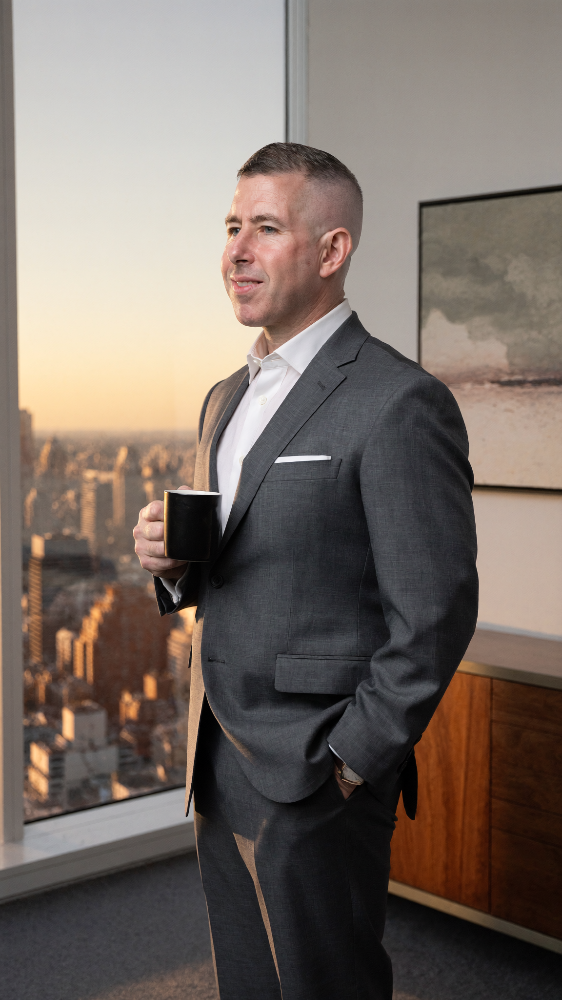
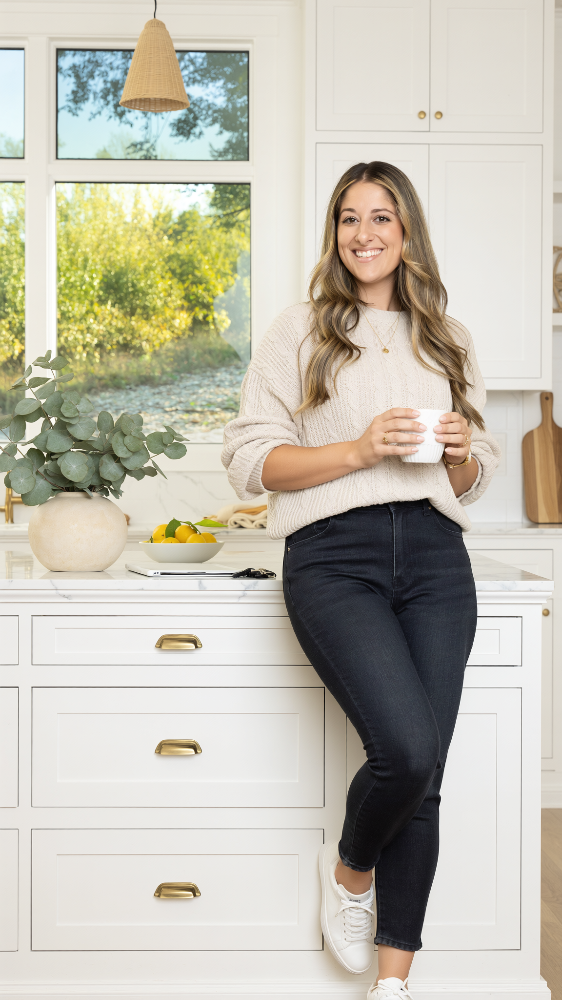
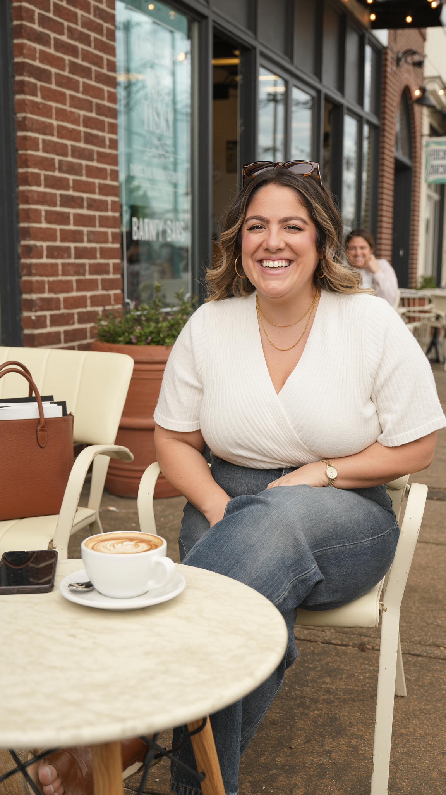
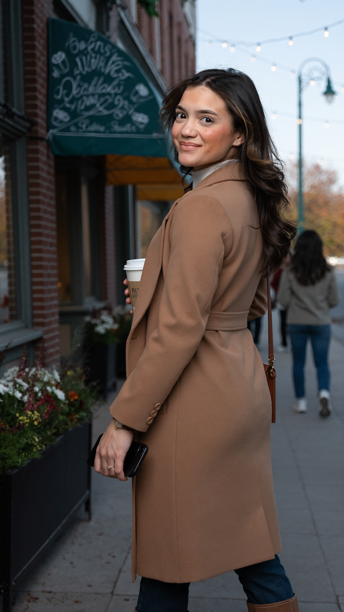
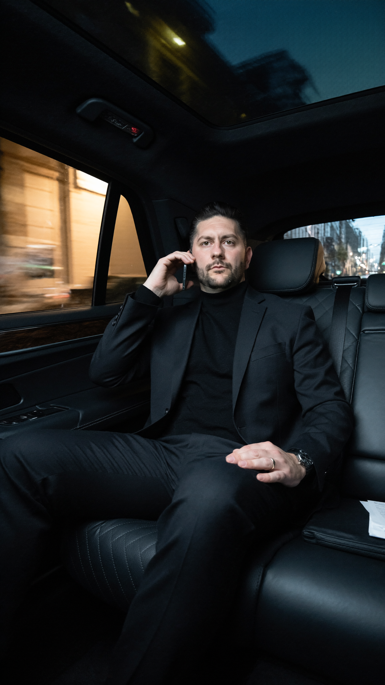
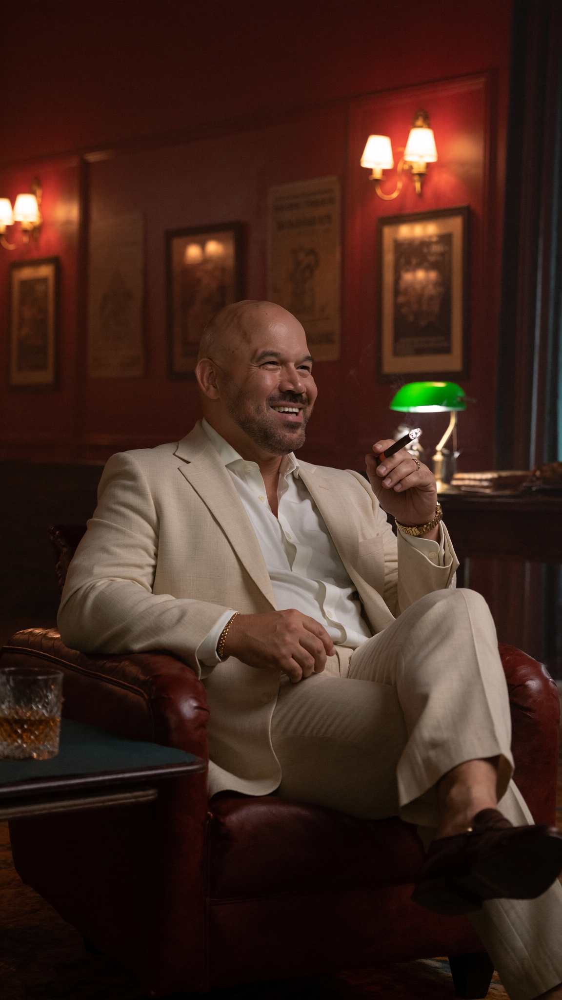
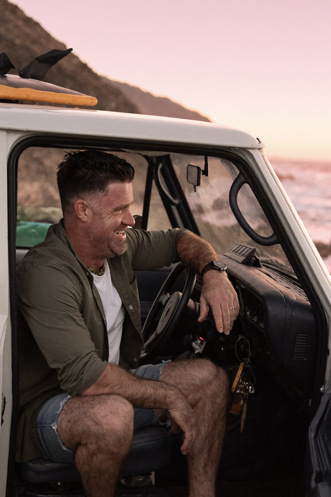

Seven ready-to-use ChatGPT photo prompts — plus two ways to put them to work without writing a single word of copy yourself.
Good ChatGPT prompts are long, technical, and exhausting to write — they read more like a film crew brief than a sentence. The good news: you don't have to write them.
Find a photo you love. Copy the prompt next to it. Paste it into ChatGPT with a photo of yourself attached. Done.
Paste any prompt into ChatGPT as a template. Then describe what you want in plain English. ChatGPT will write the detailed prompt and generate the image.
ChatGPT can use a photo of you as the subject of any prompt — keeping your real face, real build, and real style — while applying everything else from the prompt (the lighting, the outfit, the setting, the mood). One sentence makes it happen.
Attach your photo with the paperclip icon. ChatGPT will treat the prompt as the style/scene instructions and you as the casting choice.
Well-lit. Even light on the face, no harsh shadows.
Clear face. Looking toward the camera, no sunglasses, no hat brim covering eyes.
High resolution. The better the input, the better the output.
Recent. Use a photo that looks like you today.
A professional headshot is ideal. A clear iPhone photo in good light works too.
Every prompt in this deck has ten ingredients baked in. You don't have to write them. But knowing they're there is why ChatGPT can take a prompt of ours and write a great new one based on your plain-English description.

Best for: LO headshot · leadership portrait · brand hero · LinkedIn cover.

Best for: "In the home" content · lifestyle showing · warm brand campaign.

Best for: Instagram · "real moment" content · personal-brand social posts.

Best for: "In the community" content · seasonal campaign · editorial brand cover.

Best for: High-end LinkedIn hero · "operator" brand piece · dramatic portrait.

Best for: Upscale referral-partner content · "deals get done here" mood.

Best for: "Life outside the office" · personality content · weekend post.
The biggest mistake is starting over when the first image is close but not perfect. Talk to ChatGPT like a creative director — small changes only.
Pick a prompt from this deck. Copy it. Attach a photo of yourself. Generate. Drop the result in the team chat.
The shortcut works — but only if you actually use it.